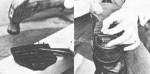

LEFT: Start the nails. The pliers save your fingers. The heel is only roughly trimmed. RIGHT: The heel is nailed on, and more ""ails are added. Hold the nail with pliers... I really whacked my thumb doing it this way.